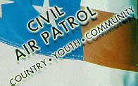
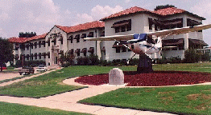
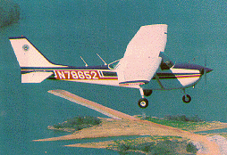

CAP Missions: Aerospace Education
For more than 50 years, the Civil Air Patrol has aggressively performed the missions Congress mandated in 1946: Aerospace Education, Cadet Programs, and Emergency Services.
Aerospace Education
America's love of manned flight started with the Wright brothers and continues unabated during this century. World War II showcased the important role aviation would play in the future and national leaders recognized the importance of stimulating public interest in aerospace activities.
CAP, as the civilian Auxiliary of the U.S. Air Force, was most suited to perform this mission. Their efforts focused on two different audiences - internal CAP members and the general public.
The internal programs ensure that all CAP members (seniors and cadets) have an appreciation for and knowledge of aerospace issues. A rigorous educational program is tied to promotions at every level in the CAP organization.
Aerospace educators working out of CAP's National Headquarters at Maxwell AFB, Alabama, provide materials that are current and reflect the highest standards of educational excellence.
The congressional charter also tasked CAP to stimulate public interest in aerospace issues. These external programs are primarily conducted through our nation's education systems.
Each year, CAP sponsors nearly 200 workshops in colleges and universities across the nation which reach more than 5,000 educators.
These workshops highlight basic aerospace knowledge and focus on advances in aerospace technology. Textbooks, learning tools, and visual aids geared to stimulate interest in aerospace matters also are provided for teachers to use in their classrooms.
Started in 1951, these workshops have reached hundreds of thousands of young people.
"CAP...a liaison between the planners of our air strength and our pilots and navigators of tomorrow...We must pass on our air experience -- not only in the AirForces, but in every section of the country."
General Carl Spaatz
Former Chairman, CAP National Board
CAP also plans and executes the National Congress on Aviation and Space Education. NCASE is the premier aerospace education conference held in the nation. The NCASE is designed to promote an understanding of aviation and space education to motivate and encourage teachers to incorporate aerospace education into their curriculum. It also encourages aerospace leaders to speak out on aerospace issues facing our nation today.
[ Back ]